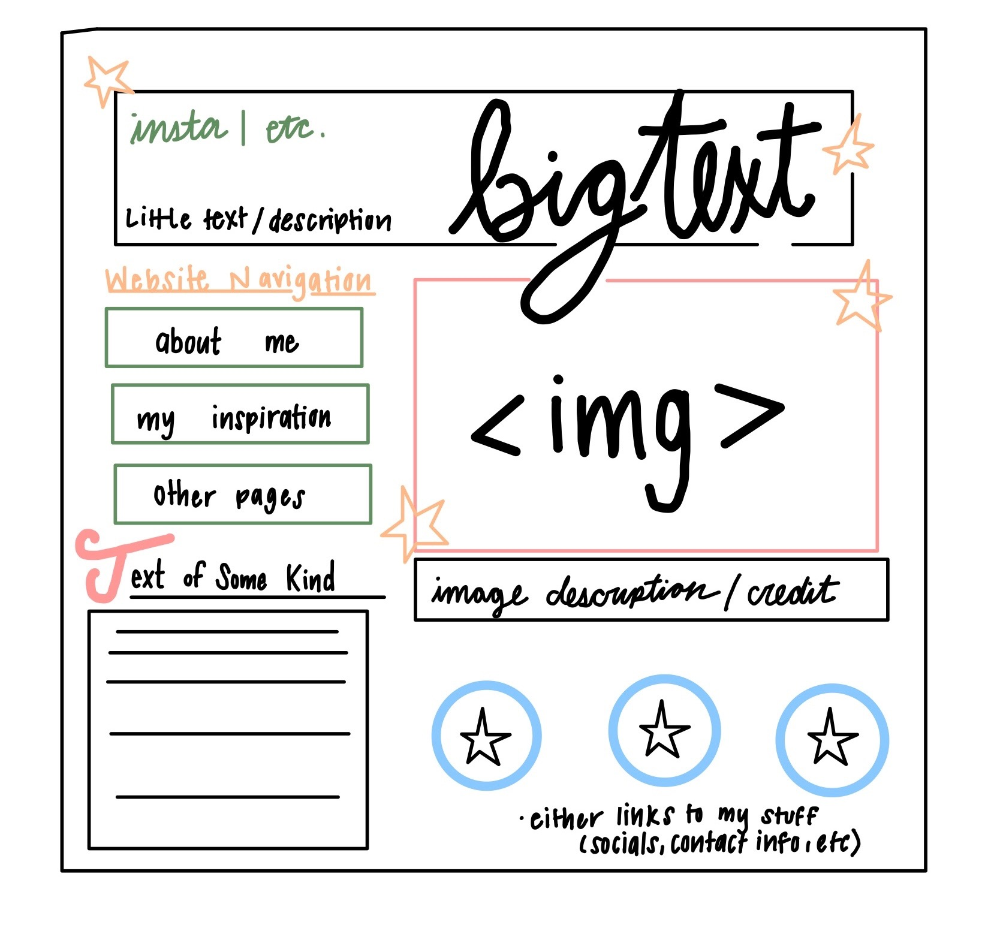

09/13 First wireframe sketch of POE page before any CSS knowledge
☆Week 3: POE Sketch and Confusion
09/13 7:28pm What do I do with this page right now? Why is the assignment due tomorrow at 4pm if I didn't know I was supposed to do anything until now? Will update later.
09/13 7:44 (RE: What do I do) Above I added my first sketch of what I want my POE to look like because I originally put it on my POE page and then realized the assignment said nothing about doing that. Oops!
☆Week 4: Style the Navigation System
09/18 8:46pm This week we learned some basic elements of CSS and this definitely made me feel more confident about this project as a whole. I added in two fonts from Adobe Fonts, changed the background colors on all pages, added borders, and even figured out how to add stars! Though I still feel like it could be better, I am very proud of the current aesthetic.
In regards to the Nav system, I moved it to the very top of each page. I would love to have a sidebar menu, but I feel like the new placement at the top is so much better in the hierarchy. It allows all of the page content to stay together while also having my pages in an easy-to-find spot. I also added a border and a background color to further emphasize the differences between it and the page contents.
Question: Is there an easier way to add child pages to the navbar or do I have to go through each html file and add the new page manually?